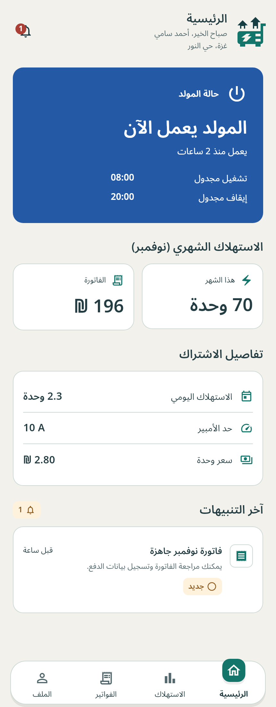
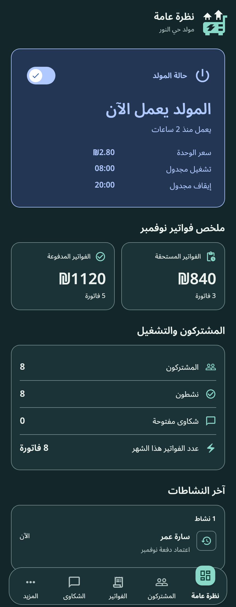

القراءة تبدأ صح
أسند العدادات للقارئ، وسجّل الاستهلاك في جولات واضحة، مع إمكانية متابعة التحضير بعد الانقطاع.
من قراءة العداد إلى الفاتورة والتحصيل؛
بوابة المولدات تجمع مهامك اليومية في تطبيق عربي واضح، وتقرّب المعلومة منك ومن مشتركيك.


بدلاً من متابعة كل مهمة في مكان مختلف، اجمع تفاصيل التشغيل والمشتركين والفوترة في تجربة منظمة.
تعرّف على الواجهاتأسند العدادات للقارئ، وسجّل الاستهلاك في جولات واضحة، مع إمكانية متابعة التحضير بعد الانقطاع.
سعر وحدة وحد أدنى وتقريب محددة للجولة؛ وتفاصيل توضح كيف حُسب المبلغ.
راجع الدفعات الكاملة والجزئية في الفوترة الدورية، وتابع الذمم والمصروفات بحسب الفترة.
طلبات انضمام وشكاوى وردود وتنبيهات داخل التطبيق، في تجربة تجمع الأطراف دون خلط الأدوار.
استكشف الواجهات حسب مسؤوليتك، وبدّل بين الوضعين الفاتح والداكن.
حالة التشغيل والمشتركون والفواتير في نظرة عامة واحدة، مع أدوات متابعة القراءات والتحصيل.
معاينة لواجهات التطبيق ببيانات تجريبية.
يسجّل صاحب المولد، ثم يراجع المشرف العام الطلب. يختار المشترك مولده وينتظر موافقة صاحبه.
يُسند صاحب المولد العدادات إلى القارئ، وتُجمع القراءات ضمن الجولة المفتوحة.
تُصدر الفواتير وفق القراءات وإعدادات الجولة، وتُتاح للمشترك بعد نشرها.
يسجّل المشترك بيانات الدفع، ويراجعها صاحب المولد، مع تحديث المستحقات بعد الاعتماد.
صاحب المولد يتابع إدارته، والقارئ يرى القراءات المسندة إليه، والمشترك يتابع بيانات اشتراكه. وصول محدد بحسب الدور والارتباط بالمولد.
تفاصيل تساعدك على فهم ما يقدّمه التطبيق وطريقة استخدامه.
نعم. لكل مولد مشتركون وقراءات وفواتير خاصة به. تُحدّد صلاحيات المستخدم بحسب دوره وارتباطه بالمولد.
يسجّل المشترك مبلغ الدفع وتاريخه ورقمه المرجعي وطريقته، ثم يراجع صاحب المولد الطلب ويعتمده أو يرفضه. تسجيل البيانات لا ينفّذ تحويلاً مالياً.
يدعم مسار الفوترة الدورية دفعات كاملة وجزئية ومتابعة المتبقي. أما الفواتير اليدوية الأقدم فلها مسار دفع الفاتورة كاملة.
التطبيق يعرض ويسجّل حالة المولد وجدوله. التحكم المادي بالتشغيل يحتاج تجهيزات وربطاً منفصلين.
يوفّر التطبيق سجل تنبيهات وإشعارات محلية. لا نعتمد عليه كخدمة تنبيه فوري مضمونة عن تغييرات بعيدة عندما يكون مغلقاً.
نعم. التطبيق عربي باتجاه من اليمين إلى اليسار، مع خط عربي مضمّن، ووضعين فاتح وداكن، وتجربة تناسب مهام كل دور.
خذ جولة في الواجهات، وتعرّف على تجربة تناسبك وتناسب مشتركيك.